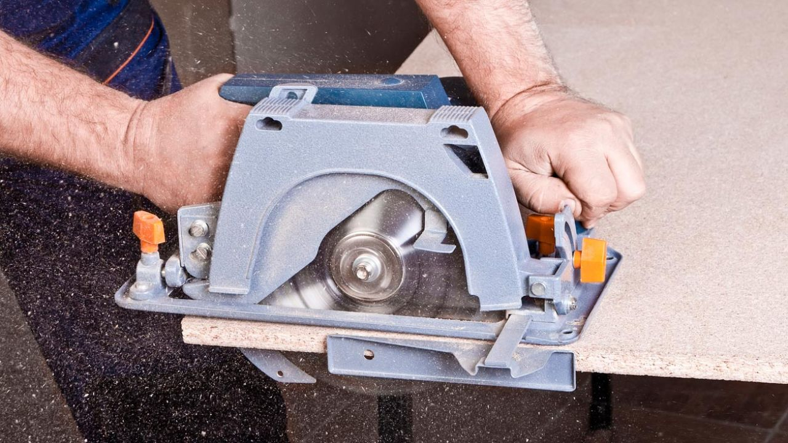

Trucos para Cortar Melamina sin Astillar
Publicado el 2 de Octubre de 2023 por Pinares.
* Utilizar Piezas mártir o de descarte.
Utilizaremos alguna pieza de madera que ya no queramos para realizar el corte y reducir el astillamiento de la melamina.
La pieza que queremos cortar debe estar en medio, entre la herramienta y la pieza mártir. Por ejemplo en el caso de la sierra
de mano el mártir estaría debajo.
* Cinta.
El truco más común y efectivo para cortar melamina de forma amateur es el de pegar cinta, normalmente de carrocero
(la que se utiliza para pintar), a lo largo de donde vamos a realizar el corte. Haciendo esto evitamos que se separen los
pequeños fragmentos de melamina que se astillan y salten.
Cuidado a la hora de quitar la cinta. Hazlo con cuidado vayas a levantar más melamina de la que astillaría la sierra.
* Cutter.
Hay también quien recomienda medir muy bien por donde va a pasar la sierra y cortar con un cutter esta línea. Teniéndola
cortada desde un principio en teoría no debería astillarse y partirse.
El problema que le veo a este consejo para cortar tableros de melamina es que la precisión necesaria para ajustar el corte del filo
de la sierra al corte hecho con el cutter debe ser perfecta. Y es algo que no está al alcance ni siquiera de mucha herramienta
profesional. Para hacernos una idea ni siquiera estamos hablando de milímetros.